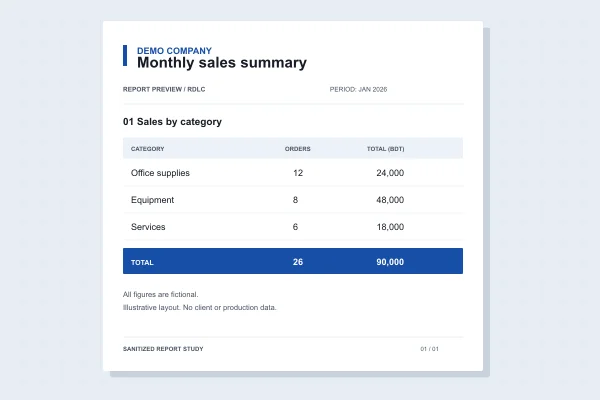

Clarra ERP · Reporting
Business reporting,
from data to document.
At a glance30+ RDLC reportsToggle project details
- Problem
- Business requirements need clear, usable reports.
- Role
- Junior Software Engineer in a 20+ developer team.
- Approach
- RDLC report work within Clarra ERP, informed by client requirement discussions.
- Result
- 30+ RDLC reports.